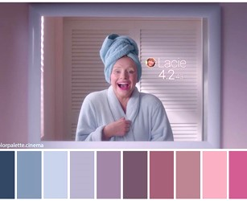
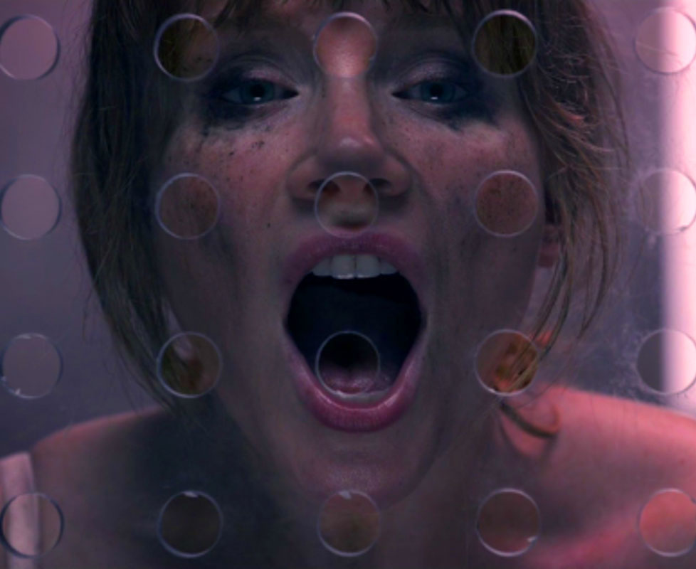

 BLACK MIRROR: VIVIR EN UN FILTRO DE INSTAGRAM DE COLOR PASTEL  BLACK MIRROR Y «NOSEDIVE»; LA OBSESIÓN POR ESTAR CONECTADOS (Y FELICES) “NOSEDIVE” IS A SOCIAL MEDIA NIGHTMARE DRESSED LIKE A PASTEL DAYDREAM